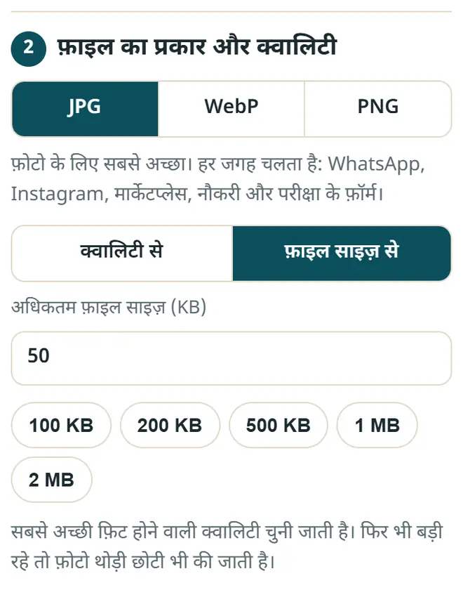
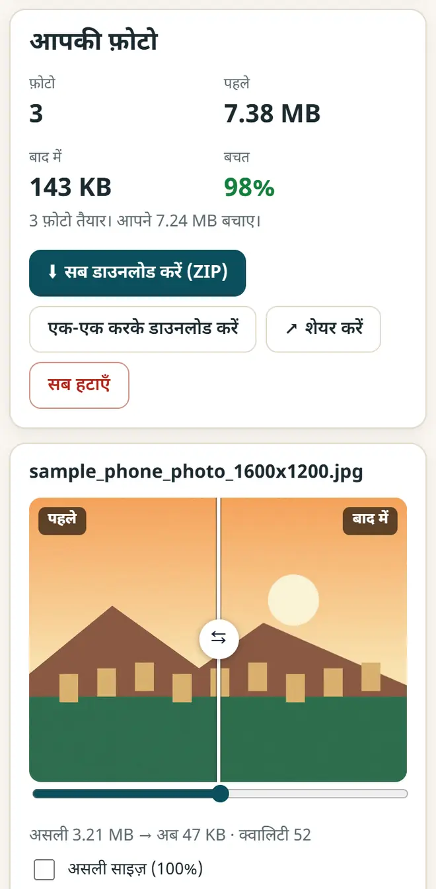

फ़ोटो को 20 KB या 50 KB में कैसे कंप्रेस करें
फ़ॉर्म कहता है कि फ़ोटो 50 KB से छोटी हो, और आपके फ़ोन की फ़ोटो 3 MB की है। यहाँ जानिए कि कुछ ही टैप में उसे सीमा के अंदर कैसे लाएँ, फ़ोटो कहीं अपलोड किए बिना।
छोटा जवाब
इमेज कंप्रेसर और रीसाइज़र खोलें, “फ़ोटो चुनें” दबाएँ और साइज़ में “वही साइज़, हल्की फ़ाइल” चुनें। कंप्रेशन में “फ़ाइल साइज़ से” चुनें और “अधिकतम फ़ाइल साइज़ (KB)” में 20, 50 या अपनी ज़रूरत की सीमा लिखें। ऐप सीमा में आने वाली सबसे अच्छी क्वालिटी चुन लेता है। फ़ोटो डाउनलोड करें और उसका साइज़ जाँच लें।
5 स्टेप में फ़ोटो कंप्रेस करें
-
अपनी फ़ोटो जोड़ें
इमेज कंप्रेसर और रीसाइज़र खोलें और “फ़ोटो चुनें” दबाएँ। एक बार में 100 तक फ़ोटो जोड़ सकते हैं: JPG, PNG, WebP या iPhone की HEIC।
-
साइज़ चुनें
चौड़ाई और ऊँचाई वही रखनी हो तो “वही साइज़, हल्की फ़ाइल” चुनें। फ़ॉर्म तय पिक्सेल माँगे तो “अपना साइज़” चुनकर चौड़ाई और ऊँचाई लिखें।
-
JPG रखें और फ़ाइल साइज़ से कंप्रेस करें
फ़ाइल का प्रकार JPG ही रखें: यह लगभग हर जगह चलता है। कंप्रेशन में “फ़ाइल साइज़ से” चुनें।
-
KB की सीमा लिखें
“अधिकतम फ़ाइल साइज़ (KB)” में 20, 50, 100 या जितना आपका फ़ॉर्म माने, उतना लिखें। ऐप अलग-अलग क्वालिटी आज़माकर सीमा में आने वाली सबसे अच्छी क्वालिटी रखता है। इतने से काम न बने तो फ़ोटो को थोड़ा छोटा भी कर देता है।

फ़ाइल साइज़ से कंप्रेस करें और सीमा KB में लिखें। -
जाँचें और डाउनलोड करें
हर फ़ोटो के साथ उसका पहले और बाद का साइज़ दिखता है। “पहले / बाद में” देखने के लिए फ़ोटो पर टैप करें। फिर “एक-एक करके डाउनलोड करें” या “सब डाउनलोड करें (ZIP)” दबाएँ।

पहले और बाद में: फ़ोटो सीमा के अंदर हैं।
बहुत छोटी फ़ाइलों के लिए सुझाव
- 20 KB की फ़ाइल में ज़्यादा बारीकी नहीं आ सकती। पहले फ़ोटो का ज़रूरी हिस्सा क्रॉप करें या कम पिक्सेल वाला साइज़ चुनें: उतने ही KB में तस्वीर ज़्यादा साफ़ दिखेगी।
- PNG को KB की सीमा में नहीं दबाया जा सकता। JPG चुनें, या वेबसाइट माने तो WebP।
- जिन परीक्षा और नौकरी के फ़ॉर्म में तय पिक्सेल, KB सीमा और DPI माँगे जाते हैं, उनके लिए फ़ॉर्म फ़ोटो और सिग्नेचर रीसाइज़र ज़्यादा आसान है: उसमें फ़ॉर्म के साइज़ पहले से भरे हैं।
- तस्वीर की जगह छोटी PDF चाहिए? PDF कंप्रेस और JPG से PDF इस्तेमाल करें।
नए मुफ़्त टूल और हिंदी में AI के पाठ पाएँ
हमारी ईमेल लिस्ट से जुड़ें: नए मुफ़्त ऐप, नई गाइड और AI पर हिंदी वीडियो पाठ की जानकारी आपको मिलती रहेगी। कोई स्पैम नहीं।
सिर्फ़ वयस्कों (18+) के लिए। आप कभी भी नाम हटवा सकते हैं।
हम ये टूल क्यों सुझाते हैं
- सबके लिए मुफ़्त: न विज्ञापन, न साइन-अप, न कोई पेड प्लान।
- प्राइवेट: आपकी फ़ाइलें और जानकारी आपके अपने डिवाइस पर ही रहती हैं।
- फ़ोन, लैपटॉप या स्मार्टबोर्ड पर चलते हैं, और एक बार खुलने के बाद बिना इंटरनेट भी।
- हिंदी समेत 12 भाषाओं में।
वीडियो से सीखना पसंद है? हमारे YouTube चैनल पर AI और मुफ़्त टूल्स के हिंदी पाठ देखें।
अक्सर पूछे जाने वाले सवाल
फ़ोटो को 20 KB का कैसे करें?
“फ़ाइल साइज़ से” चुनें और “अधिकतम फ़ाइल साइज़ (KB)” में 20 लिखें। फ़ोटो बड़ी हो तो ऐप उसके पिक्सेल भी घटा देता है, ताकि वह सीमा में आ जाए। ज़्यादा साफ़ नतीजे के लिए पहले फ़ोटो क्रॉप करें या छोटा साइज़ चुनें।
और 50 KB या 100 KB का?
उसी तरह: 50 या 100 लिखें। आप 5 KB से ऊपर की कोई भी सीमा लिख सकते हैं।
क्या फ़ोटो ख़राब दिखेगी?
छोटी फ़ाइल का मतलब है कम बारीकी। ऐप हमेशा आपकी सीमा में आने वाली सबसे अच्छी क्वालिटी चुनता है, और डाउनलोड से पहले आप “पहले / बाद में” में देखकर जाँच सकते हैं।
क्या मेरी फ़ोटो अपलोड होती हैं?
नहीं। वे आपके ब्राउज़र के अंदर ही बदली जाती हैं और आपके डिवाइस से बाहर नहीं जातीं। नई फ़ाइल से GPS लोकेशन जैसी छिपी जानकारी भी हट जाती है।
क्या कई फ़ोटो एक साथ कंप्रेस हो सकती हैं?
हाँ, एक बार में 100 तक। उन्हें एक-एक करके या सबको एक ZIP फ़ाइल में डाउनलोड करें।
काम की लगी?
इसे किसी दोस्त, साथियों या अपने स्कूल के WhatsApp ग्रुप में भेजें।